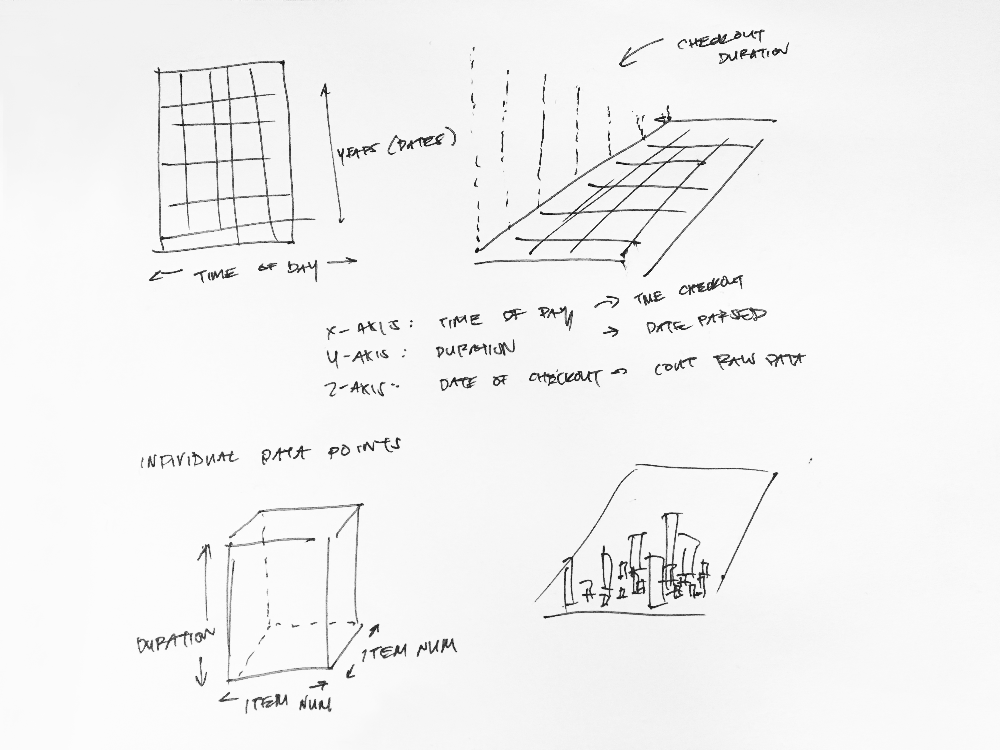
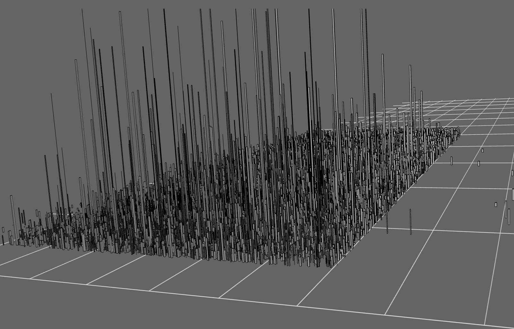
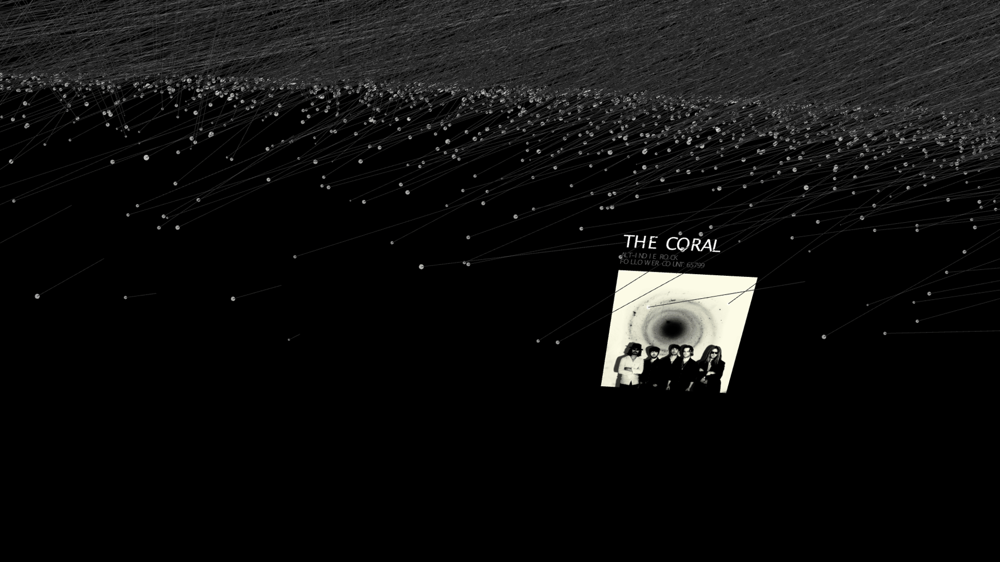
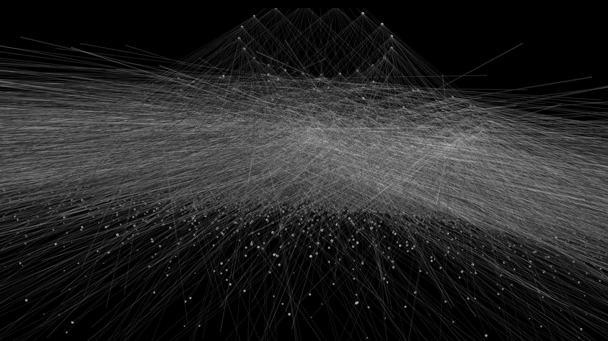

crafting visual forms to display abstracted data and to reveal and communicate their inner insights
During my last undergraduate quarter, I took a Data Visualization class at the Media Arts and Technology graduate program at UC Santa Barbara. The goal of the class was to present new interactive and experimental approaches to visualizing quantitative
information. We were encouraged to make creative concepts while emphasizing clarity, revealing insights within the data, and designing for interactivity.
Over the course of ten weeks, I created 3 different projects - a 2D visualization, a 3D visualization, and an interactive visualization.
Life and Death of Media
I wanted to find how the popularity of various media changed from 2007 to 2016, visualizing them as a life cycle inspired by the form of tree rings.
Digital Skyline
This project was focused on the changing use of the vernacular of the digital world over time, the data itself re-creating the urban sprawl of modern metropolis.
The Artist Network
Using data from Spotify, I wanted to focus on creating a graphical, galaxy-like representation of how so-called “related artists” on the music streaming platform formed a network with each other.
For each visualization, I started with rough idea of the interesting trends that I wanted to showcase. However, unlike in many other design projects, it was important not to strictly define and constrain the form of the data itself; instead, the goal
was to create a framework in which visual information could populate and reveal insights. This was handled mostly through sketches or basic digital layouts.

The next step was obtaining and being able to interact with data using MySQL. The data for the first two projects from the Seattle Public Library were provided specifically for us, while the latter was obtained through the use of the Spotify API.
This then meant I had to formulate interesting questions about the data itself. For the first visualization, it was a simple question: “How do different mediums change in popularity over time?” But with each new project, the questions either
became more specific: “How does the usage of certain terms or vernacular change over time, as expressed through titles?” Or the question and answer became more abstract: “How are different, related artists on Spotify connected to each other?” Part
of the challenge then became accurately taking these questions and translating them into queries that would accurately the data that would reveal an answer.
Finally, I used Processing to create these visualizations: first through lower-fidelity working concepts to enhance clarity, dial-in the correct scale, test interactive elements, and boost performance. Through progressive refinement, the
projects took on more aesthetically pleasing displays while still providing maximum information in an easily-understandable package.

To first get the data we needed, we used MySQL to craft queries to extract relevant and specified data from the giant (and still continually updating) Seattle Public Library database that we had access to. Often at the start of these projects, prototyping
or creating visual references meant laying out rough mockups in Photoshop or in Illustrator. Simple data-trimming or extrapolating required necessitated some Excel use.
The Spotify Network project required a different process, instead using Spotify’s API. The resulting CSV or JSON files were then taken into Processing, which I used to create these projects, moving from fairly simple, static sketches to
more involved, interactive presentations.
With each successive project, there were more variables to consider: the 2D visualization only really needed to show how popular different mediums were over time. The 3D project required not only included checkouts and dates, but also the
time of day, duration, and title names. And finally, for the interactive Artist Network project, I needed to find connections between different artists.

There were certain other considerations: for example, I was worried about achieving granularity in our presentations – to have a truly compelling graphical representation of trends, the data not only needs a wide scope but also depth of detail. While
making these visualizations, there was a thin line between emphasizing visual themes like the tree ring form or the cityscape while avoiding impressing too much of a personal touch on the data itself.
Spatial considerations had to be made – especially on the later interactive projects. In dealing with these, I wanted to make sure that the scale and space that the objects occupied fit the overall message I was trying to convey with the
data.
